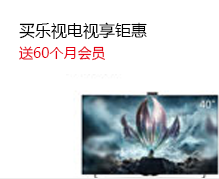
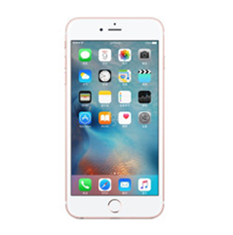
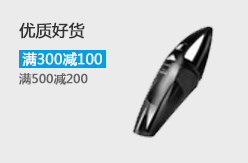
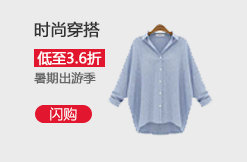

10000
微博
私信
评论
@我
微博
私信
评论
@我
微博
私信
评论
@我
微博
私信
评论
@我
排他
排他
排他
排他
乐视
iphone
三星


我的待办
我的已办
我处理的
草稿箱
待办列表
已办列表
我处理的
草稿箱
显示
隐藏
切换
下滑动
上滑动
切换
淡入
淡出
切换
修改背景色


点我移动滑块
w=11
+
-
￥10.30
￥10.30
删除
+
-
￥20.00
￥20.00
删除
总数量
总金额
删除所选商品
删除全部商品
1
2
3
我是亲生的
返回顶部
电器区域
手机区域
家具区域
电器区域
手机区域
家具区域
on事件
我是委派方
我是委派方
我是委派方
我是委派方
我是委派方
我是委派方
发布
Remember Me
Sign Up for Newsletter